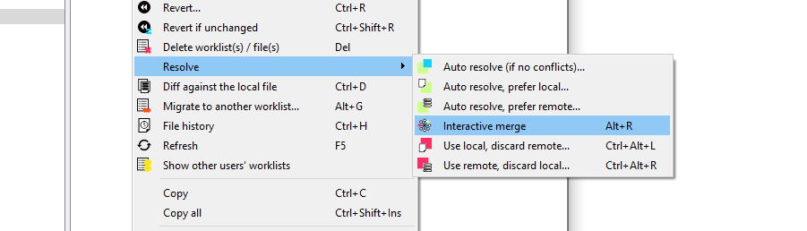

Hex-Rays Vault’s visual client user manual
About this manual
This user guide provides information about HVUI, the Hex-Rays Vault visual client.
HVUI is provided in addition to the command-line client, HV.
This manual assumes that the reader has an understanding of the IDA Teams general concepts.
NOTE: Although Hex-Rays Vault will host any file you want, its primary use-case is to allow users to keep a history, and allow collaborative work on, IDA databases (i.e., .idb and .i64 files.) Throughout this manual, we will be using the terms "idbs" and "files" interchangeably.
Getting started
In order to function, HVUI will need to connect to a Hex-Rays Vault server.
This guide assumes that such a server is running, accessible, and an account is available:
| Connection attributes | |
|---|---|
| Host | vaultserver |
| Port | 65433 |
| User name | joe |
| User password | secret |
Starting HVUI
The first time the user starts the application, credentials will need to be input:
NOTE: Checking the checkbox at the bottom of the form, will cause HVUI to store credentials in the registry, password(s) will be stored in the OS's keychain.
If this is the first time a login is performed from this machine, the user will have to specify a directory where files will be locally stored:
This will a site (that is, a mapping of the server files on the local disk) for use on this computer.
After accepting the dialog, you will be presented with the main view:
Getting the latest revision
The widget now shows what files are available.
Notice the #0/1 suffixes: it means we currently have revision number 0 (i.e., no revision at all) of those files.
Let's sync those files to their latest revision, from the server:
And the files are now up-to-date:
Working with files
In the previous chapter, we have introduced the notion of "syncing to the latest revision".
This chapter will go a bit further, and introduce the most common, day-to-day operations users will want to perform on their files.
What are worklists, and commits?
Any work done in HVUI will involve worklists, and commits.
Worklist
A worklist holds files that have been
- modified,
- marked for addition or
- deletion,
- …
Those modifications are local to the user’s site. They will only be made available for everyone after the user commits the worklist.
Commit
Once a worklist is committed, it becomes a commit, and makes its modifications available for everyone.
In comparison to a worklist, a commit holds "published" modifications, and any user syncing to that commit will benefit from those.
Let’s look at a concrete example illustrating worklists and commits: adding a file to the Hex-Rays Vault!
Adding files to the vault
From the "Local files" widget, I can add a file that is not yet present in the Hex-Rays Vault server:
That file will now be added to the current worklist (one will be created if needed):
For this new file to become available for everyone, the user will need to "commit" the worklist:
Once the worklist is committed, it becomes a commit, and the modifications are then available for everyone:
TIP: Notice how our commit isn’t the first one in the system: another user submitted a commit before us — it’s that commit that added the files we’ve seen in the getting-started portion of this guide.
Modifying files
When working on a file, a user must first check it out for modification:
Just like with the adding, the file will now show in a worklist:
…and just like with the adding, whatever modification you make to the file, will only be visible to coworkers after committing that worklist.
Committing
Files that have been checked out (e.g. for modification) or opened for adding will go into a worklist until they are committed, which then turns the worklist into a commit. A worklist can be committed to make its changes available to other users: right-click, commit
The worklist becomes a commit:
…and the worklist is gone:
Synchronizing files
To fetch the latest set of the changes (changes/additions/deletions), use "Get latest revision".
Viewing the history of a file
To get an overview of all of the changes made to a file: right-click, File history
From the "History of …" widget, you can view any revision of a file.
It’s also possible to synchronize files to older revisions, from this widget.
When asked to do that, HVUI will retrieve that older revision of the file from the server. This is what will now be present on your filesystem.
Notice how the file now shows as 'outdated':
Opening files
On many widgets, it's possible to view/open a file. If the file extension has a corresponding association it will be used to open the file.
File associations
Out-of-the-box, HVUI associates .i64 files with IDA. In addition to that, it provides a default "fallback" "*" association that will cause matching files to be opened in IDA.
Users can specify their file extension associations via a form available from the View menu.
Deleting files
Files can be removed from the server (if they have become unnecessary for example): right-click, delete.
Just like other file actions, the change (deletion) needs to be committed for its effects to be visible on the server.
Reverting changes to files
To revert unwanted changes to a file: right-click, Revert
It is also possible to use "Revert if unchanged" to only revert files that were checked out without actual changes. This is especially useful when used on a selection of files or a directory.
Renaming and Moving Files or Folders
One may wish to rename and/or move around files/folders in their workspace, for that "Checkout for move/rename..." can be used.

Copying Files or Folders
{hvui_app} provides an action to copy files or directories easily. Use "Checkout for copy...".
Finding a file in the vault
When a vault contains a lot of files, manually searching for a file in the directory tree becomes inefficient. To help you locate files easily, you can use the Find in vault… action.

You can navigate between the search results by using Next search result and Previous search result, located next to Find in vault… both in the toolbar, and in the "Search" menu.
Font styles
As you may have noticed by now, files are shown with different font styles in different circumstances.
A gray font denotes a file that is not in the vault. It has been added or renamed and not yet commited.
A bold font means that this file is being worked on, or has been changed.
An italic font means that it’s not the latest version of this file.
Some combinations are possible, for example a file being resolved (not latest version and being worked on) will have a bold and italic font style. The combination gray (not in vault) and italic (not latest version) is for example not possible.
Inspecting changes
After having done some reverse-engineering work on an IDA database, it is possible to view those changes in a special mode in IDA: right-click, and choose the diff action:

Here a new instance of IDA will be launched in a special "diff" mode:
IDA's diff mode
This new IDA mode lets the user compare two databases, in a traditional "diff" fashion: essentially a two-panel window, showing the unmodified file on the left and the version with your changes on the right.
The "Progress" widget
Represents the current step in the diff process.
The left panel
Shows the "untouched" version of the database (i.e., the one without your changes)
The right panel

Shows your version of the database (i.e., featuring your changes)
Diff region details
Notice how both panels have a little area at the bottom, that is labeled "Details".
Details are available on certain steps of the diffing process, and provide additional information about the change that is currently displayed.
The "diffing" toolbar

The actions in the toolbar are:
Using actions in the toolbar, you can now iterate through the differences between the two databases, with each change shown in context as if viewed through a normal IDA window.
The ability to view changes in context was a major factor in the decision to use IDA itself as the diffing/merging tool for IDA Teams.
Diff mode IDA's toolbar actions
Previous chunk
Move to the previous change
Center chunk
Re-center the panels to show the current chunk (useful if you navigated around to get more context)
Next chunk
Move to the next change
Proceed to the next step
Move to the next step in the diffing process.
Toggle 'Details'
Toggle the visibility of the "Details" widgets in the various panels (note that some steps do not provide details, so even if the "Details" are requested, they might not be currently visible.)
Terminology
It is important to note the difference between the terms "diff" and "merge".
This document will sometimes use the two terms interchangeably. This is because to IDA, a diff is just a specialized merge. Both diffing and merging are handled by IDA's "merge mode", which involves up to 3 databases, one of which can be modified to contain the result of the merge.
A diff is simply a merge operation that involves only 2 databases, neither of which are modified.
This is why often times you will see the term "merge" used in the context of a diff. In this case "merge" is referring to IDA's "merge mode", rather than the process of merging multiple databases together into a combined database.
Using IDA as a diffing tool
We must stress the fact that performing a merge between two IDA databases is quite different than performing a merge between, say, two text files. A change in a chunk of text file will not have an impact over another chunk.
IDA databases are not so simple. A change in one place in an idb will often have an impact on another place. For example, if a structure mystruct changed between two databases, it will have an impact not only on the name of the structure, but on cross-references to structure members, function prototypes, etc.
This is why IDA's merge mode is split into a strict series of "steps":

Within a single step it is possible to go forward & backward between different chunks. But because of possible inter-dependencies between steps, it is not possible to move backwards between steps, you can only go forward:
Since IDA's diff mode is just a variation of its merge mode, diffing databases is also subject to this sequential application of steps in order to view certain bits of information. That is why, in some steps (e.g., the "Disassembly/Items") IDA might not report some changes that were performed at another level.
For instance, if a user marked a function as noret, the listings that will be shown in "Disassembly/Items" step, will not advertise that there was a change at that place (even though the "Attributes: noreturn" is visible in the left-hand listing), only the changes to the instructions (and data, ...) are visible in the current step:

The change will, however, be visible at a later step (i.e., "Functions/Registry"):

NOTE: The changes applied during the "diff" process are only temporary. Exiting IDA (at any moment) will not alter the files being compared.
Merging concurrent modifications (conflicts)
As with any collaborative tool, it may happen that two coworkers work on the same dataset (e.g., IDA database), and make modifications to the same areas, resulting in "conflicts". Conflicts must be "resolved" prior to committing.

To do that, right-click and pick one of the "resolve" options:

IDA Teams provides the following merge strategies.
Interactive merging
If the option that was chosen (e.g., Interactive merge mode) requires user interaction due to conflicts, IDA will show in 3-pane "merge" mode.
When a conflict is encountered, you'll have the ability to pick, for all conflicts, which change should be kept (yours, or the other). Every time you pick a change (and thus resolve a conflict), IDA will proceed with the merging, applying all the non-conflicting changes it can, until the next conflict - if any. When all conflicts are resolved, you can leave IDA, and the new resulting file is ready to be submitted.
General concepts
Collaboration in the reverse-engineering field
Over the years, a trend has been emerging in the field of reverse-engineering: a need to enable collaboration between different (teams of) individuals and share their work with one another.
In order to achieve that, different groups of people have come up with different strategies, the most common ones being:
- "live" propagation of changes from one IDA session, to other sessions (this requires all IDA instances are either directly connected, or talk to a server, at all time)
- extracting some of the important bits of work done on an
.idb, and applying those to another one -- in fact, we at Hex-Rays have also been providing a tool that enables this type of workflow: the lumina server.
While those solutions have interesting properties, they also typically suffer from significant drawbacks as well:
- they might require a live connection at all times in order to work,
- there is no way to make sure many supposedly-synced IDA sessions are indeed working with exactly the same data,
- the information that's extracted isn't complete enough,
- ...
So we took a step back and looked at how things are done in other places, and in particular in the field of software engineering, where collaboration over a piece of software is typically achieved by using [revision control](#Revision control-for-reverse-engineering-projects).
That is why one of the key features of IDA Teams, is software engineering-inspired revision control, applied to reverse-engineering
NOTE: Plans for IDA Teams span well beyond just revision control, but this was our first, significant milestone.
Revision control, for reverse-engineering projects
The general concepts behind IDA Teams revision control, are essentially the same as those behind many other revision control systems, and uses a client-server architecture.
- On the server-side, we will find a new component: the vault server
- On the client side, we will find that an IDA Teams installation now install a few additional binaries: a pair of clients to connect to the server
The vault_server
The server, called vault_server, maintains a ledger of operations that were performed on the files that it hosts: modifications, added files, deleted files, ...
It should be made available to all members of a team destined to work on common projects.
The server comes with its own installer, and an "admin guide" explaining how to tune the installation & perform common tasks.
The clients
On the client-side, IDA Teams will consist of an IDA installer, to be installed on each user's computer.
In addition to the regular IDA binaries, that new installer will alse place two clients to connect to the vault_server:
hv: a command-line interface clienthvui: a visual client
Users interact with the server using those tools, which lets them get a good view over who contributed what, and offer functionality for organizing their work in the most efficient way possible.
Online vs Offline
Users have all the freedom to organize their work the way they see fit: they don't have to be connected at all times, and will only need to be able to connect to the server when it is time to publish their changes so they are available for others to benefit from.
Resolving conflicts in a file
When a user needs to commit changes made to a file, but that same file has received other modifications (likely from other users) in the meantime, it is necessary to first "merge" the two sets of modifications together.
When the two sets of modifications do not overlap, merging is trivial
- at least conceptually. But when they do overlap, they produce conflict(s).
Since IDA Teams focuses on collaboration over IDA database files, the rest of this section will focus on the different strategies that are available for resolving conflicts among those.
IDA Teams comes with multiple strategies to help in conflict resolution of IDA database files:
Auto-resolve (if no conflicts)
Launch IDA in a non-interactive batch mode, attempting to perform all merging automatically.
If any conflict is discovered, bail out of the merge process, and don't modify the local database.
Auto-resolve, prefer local
Launch IDA in a non-interactive batch mode, attempting to perform all merging automatically.
If a conflict is discovered, assume that the "local" change (i.e., the current user's change) is the correct one, and apply that.
Once all merging is done and conflicts are resolved, write those to the local database and exit IDA
Auto-resolve, prefer remote
Launch IDA in a non-interactive batch mode, attempting to perform all merging automatically.
If a conflict is discovered, assume that the "remote" change (i.e., the change made by another user) is the correct one, and apply that.
Once all merging is done and conflicts are resolved, write those to the local database and exit IDA
Interactive merge mode
Manual merge mode.
This will launch IDA in an interactive, 3-pane mode, allowing the user to decide how to resolve each conflict.
Once all merging is done and conflicts are resolved, exit IDA and write the changes to the local database.
Use local, discard remote
Select the local database, ignoring all changes in the remote database.
No IDA process is run.
Use remote, discard local
Select the remote database, ignoring all changes in the local database.
No IDA process is run.
What is a "site"?
A site represents a mapping of the server files to the local filesystem. Normally each computer has a site associated with it. A site has the following attributes:
- A site name
- A host name
- The path to a folder on the filesystem (a.k.a., "root directory")
- Path filters (optional)

Root directory
The root directory is the essential attribute of a site. It denotes where all files from the vault server will be mapped to the local disk. Everything inside the root directory can potentially be uploaded to the vault server and shared with other team members.
The vault server cannot manage files located outside the root directory. However, this limitation is straightforward to overcome: create a symbolic link (or, on Windows, a junction point) from the root directory to the directory of your choice. This will make the target of the symbolic link visible as part of the root directory.
The vault server keeps track of each site's state: what files have been downloaded to the local disk, what files have been checked out for editing, etc. This simplifies the housekeeping tasks, especially for big repositories with millions of files. Even for them, downloading the latest files or reconciling the local disk with the server, are almost instantaneous.
The host name is a security feature that prevents from using a site on a wrong computer. Since the server keeps track of the files downloaded to each site, using a wrong site may lead to an inconsistent mapping between the server and local disk. However, if the user does not want this protection, it is possible to erase the host name in the site definition.
Sites can be edited from the "Sites" view.
Path filters
By default all server files are visible, but for servers that manage gigabytes of data this can be problematic: it may be undesirable for users to download all files to their local computer.
Site filters provide a mechanism that lets users restrict the set of files their IDA Teams client works with. Users who want to work on some specific projects can set a filter that restricts the visibility only to selected subdirectories.
Each site has its own filters, that con be modified at any time. Filters do not directly affect any files on the local disk, or on the server: they are strictly about visibility.
WARNING: Site filters are meant simplify a user's life by letting them focus on specific projects. Since they can be modified by users, they should not be considered a security measure: that would be the role of the permissions system, which can only be managed by vault_server administrators.
NOTE: The purpose of site filters is to create a subset of the full set of files provided by the server. Site filters don't directly affect what locally-available files (i.e., present in the site's rootdir, but not tracked by the server) are visible by IDA Teams clients.
There is another mechanism to specify what files should not be added to the vault. See .hvignore for more info.
Examples
An empty filter
$ cat empty_filter.txt
$
Hide all files, except those in malware/
$ cat only_malware.txt
malware/
$
Show all files, except those from the pentesting team
$ cat hide_pentest.txt
!pentesting/
$
Show all files but those from the pentesting team, except their produced documents
$ cat hide_pentest_but_docs.txt
!pentesting/
pentesting/research_docs/
$
hvignore (and .hvignore) files
IDA Teams comes with a mechanism that lets users specify what files should be ignored when adding files from their local machines to the vault_server.
The main hvignore file (path/to/install-dir/hvignore)
In IDA Teams' install directory, you will find the "main" hvignore file, that is pre-populated with a list of files that you would typically not want to add to the vault_server, such as .bak backup files and unpacked IDA database files: .id0, .nam, etc...
The syntax for hvignore is very close to that of .gitignore files.
Additional .hvignore files
In addition to that file, you can have .hvignore file (notice the . - dot) placed in your site's directory structure.
When found, those files' contents will be appended to the main file's contents.
The registry
On Microsoft Windows, IDA Teams will store certain bits of information in the registry (host name, user name, site name.)
On macOS and Linux, it will use a pseudo-registry file, located at $HOME/.idapro/hvui.reg.
Passwords storage in the OS's keychain
While hosts, user names & site names are persisted to the registry, passwords are stored securely in the operating system's keychain.
- On Windows, the Windows Credential Store is used (therefore requiring Windows 7 or newer)
- On macOS, the macOS Keychain is used
- On Linux, the "Secret service" is used (through
libsecret-1)
Managing permissions on a vault
The vault_server includes a way to restrict the access of users and groups to the data stored in the vault_server.
The permission file is a text file that contains the permission table. The file consists of lines that grant or deny access to certain path patterns in the vault. The syntax for an entry is the following:
grant/deny group/user NAME PERMISSION VAULT_PATH_PATTERN
Possible PERMISSION values are: list, read and write. read includes list, write includes read (and thus also includes list).
Example of a permission file:
# deny everything to everyone. no need to specify it explicitly,
# it is the default for a non-empty permission table:
# deny user * list //*
deny user * list //secret/ # nobody can see //secret. this line is superfluous
# because everything is denied by default.
grant user hughes write //secret/ # but hughes can write to secret and its subdirs
grant user john read //secret/ # and john can read the entire directory.
deny user * list //secret/supersecret # supersecret is not visible to anyone
grant user hughes write //secret/supersecret # but hughes can modify it (john cannot)
grant user * write //local_files/ # everyone can work with 'local_files'
deny group remote list //local_files/ # except that the 'remote' group cannot see 'local_files'
An empty permission table means that no permissions are enforced rendering all files accessible by everyone. As soon as a non-empty permission table is specified, all access is denied to everyone by default.
Path patterns may refer to (yet) unexisting files. Users and groups too may refer to unexisting users and groups.
The order of the permission file is important as the last lines will take precedence over the preceding lines (if there are conflicts).
Admins are not affected by the permission table, they are granted all access.
To install a new permission table, use perm set
The current permissions can be retrieved using perm get
Tour of hvui’s widgets
Vault files
The "Vault files" widget represents the data that's available on the server.
Since its contents can be very similar to what is shown in the "Local files" (depending on whether user’s site is using site filters or not), it has been given differentiating background color, in the hope of not confusing it with that other widget.
Actions
- Get the latest revision
- Scan and commit
- Checkout for edit
- Add to vault
- Checkout for delete
- Checkout for move/rename…
- Checkout for copy…
- Revert…
- Revert if unchanged
- Open
- Auto resolve (if no conflicts)…
- Auto resolve, prefer local…
- Auto resolve, prefer remote…
- Interactive merge
- Use local, discard remote…
- Use remote, discard local…
- Diff against the local file
- Diff against previous revision
- File history
- Find in vault…
- Next search result
- Previous search result
- Refresh
- Show deleted files
- Show in Vault files/Show in Local files
Local files
The "Local files" widget represents the data that's available on the local disk.
The root of the tree starts at the site’s workdir.
Note that this widget honors the hvignore file that’s placed in the installation directory next to hvui, and also any .hvignore file found in the directory structure.
Actions
- Get the latest revision
- Scan and commit
- Checkout for edit
- Add to vault
- Checkout for delete
- Checkout for move/rename…
- Checkout for copy…
- Revert…
- Revert if unchanged
- Open
- Open the containing folder // local only
- Auto resolve (if no conflicts)…
- Auto resolve, prefer local…
- Auto resolve, prefer remote…
- Interactive merge
- Use local, discard remote…
- Use remote, discard local…
- Diff against the local file
- Diff against previous revision
- File history
- Find in vault…
- Next search result
- Previous search result
- Refresh
- Show deleted files
- Show in Vault files/Show in Local files
Worklists
The "Worklists" widget groups all the modifications that are still pending (and are thus not yet visible to other users)
Those changes are grouped by "Worklist" (i.e., topic). A typical worklist will hold files that are related, and will be made available to all once a worklist is committed.
It is possible to move file(s) from a worklist to another, by "drag & drop"'ing them, "cut & paste"'ing them, or using the Migrate to another worklist… action.
By default, this widget will only show the current user’s worklists, but can be made to show everyone’s worklists, in read-only mode: the current user will still only be able to modify (or commit) his/her own worklists.
Actions
- Open
- Commit…
- Add new worklist…
- Edit worklist…
- Revert…
- Revert if unchanged
- Delete worklist…
- View worklist…
- Auto resolve (if no conflicts)…
- Auto resolve, prefer local…
- Auto resolve, prefer remote…
- Interactive merge
- Use local, discard remote…
- Use remote, discard local…
- Diff against the local file
- Migrate to another worklist…
- File history
- Refresh
- Show other users' worklists
Commits
The "commits" widget shows a list of previous commits made to the server, in a concise and condensed way.
It is possible to request a detailed view for any entry in that list.
NOTE: The amount of entries displayed by this widget can be configured through the "Options" dialog.
Actions
Commit
Using the "commits" widget, it is possible to inspect what changes were previously submitted to the vault in a particular commit.
Actions
- Open this revision
- Sync to this revision
- Diff against previous revision
- Checkout for copy…
- File history
Sites
The "Sites" widget provides the ability for a user (or an admin) to administrate users' sites.
Non-admin users will only be able to modify their own site(s), while an admin will have the ability to do so for all users' sites.
If you find yourself using more than one site on any specific machine, you will likely have to resort to the Use this site… to switch between them.
Actions
Users
The "Users" widget lists all knows users of the Hex-Rays Vault server.
Non-admin users have the possibility to change their password.
Users with administrator rights will, in addition, be able to add, remove, modify users - and modify anyone's password.
Actions
Log window
The logging area is helpful in providing feedback about different types of events:
- Details of successful operations
- Connection state (logins, logout's, network issues, ...)
- ...other various bits of information that the program deems relevant for the user to know
Actions
The logging area provides typical text-manipulating functions (copying, searching, ...) as well as the ability to turn timestamps on/off.
File history
The "File history" widget shows all changes ever commited to a single file.
Actions
- Open this revision
- Sync to this revision
- Checkout for copy…
- Details… (on "Commits" widget)
- Diff against previous revision
- Diff against…
User interface actions
The following is a list of actions, available in hvui. Note that most actions are "contextualized" in the sense that they require certain conditions to be met, in order to work:
- the widget being operated on,
- whether or not a selection is available,
- the state of the selected file(s),
- …
All actions are available from the toplevel menubar's submenus. Those whose operating conditions are not met, will appear disabled.
NOTE: Contrary to the toplevel menubar's submenus, context menus (AKA: popup menus, right-click menus, …) will not feature actions that are disabled. Those menus are created on-the-fly, and it's best not to pollute them with unnecessary noise.
Get the latest revision
Sync the selected file(s) (or the entire server contents), to the latest revision.
This effectively updates all local copies of the files, except for those that are currently opened for edition, addition or deletion: those will be left untouched in order to not risk losing user modifications made to them.
Commit…
Prompts the user for a commit description, and submits the files that are part of the current worklist, to the server.
Once successfully committed, a worklist will disappear and a new entry will be added to the list of commits.
Committed changes (modifications, additions and deletions) are available for all users that can access those files.
Scan and commit
Scan the selected files/folders (or the entire root directory), and create a worklist with all changes that were found: files that have been added, removed, modified, …
Unless you explicitly tell it not to (by checking the "Do not show this dialog anymore" checkbox), this action will first offer the possibility to refine what exactly the scan should be looking for:
Spotting new or deleted files is fairly straightforward, but when it comes to existing files, hvui will also perform a md5 checksum comparison.
If differences are found, hvui will prepare a new worklist with those.
This is especially useful if one had to work on some files while no connection to the server was available (e.g., on a plane).
The files found will be filtered by hvignore.
Details… (on "Commits" widget)
Opens a detailed view of the commit details, including a list of the files that were modified:
Sync to this revision
Retrieve the specified revision from the server, and replace the local file with it.
Diff against previous revision
For each selected file, perform a diff of the selected file, against its previous revision.
NOTE: If a file is opened and has been modified, those yet-unsubmitted modifications will not be part of the diff: only those between the two recorded revisions, will be visible.
Diff against…
A more powerful version of diff, that lets the user pick for each "side" of the diff:
- either the current revision, any revision number, or to the local file on disk
- the path to the file (it is therefore possible to diff entirely unrelated files together)
Checkout for edit
Informs the server that we will be working on those files in the near future.
They will be added to the worklist number 1 (which will be created if it doesn't exist), and will turn bold, to draw attention to them.
Add to vault
Informs the server that we wish to add the selected file(s) to the list of files managed by the server.
They will be added to the worklist number 1 (which will be created if it doesn't exist), and will turn bold, to draw attention to them.
The files selected will be filtered by hvignore.
Checkout for delete
Informs the server that we wish to delete the selected file(s) from the list of files managed by the server.
They will be added to the worklist number 1 (which will be created if it doesn't exist), and will turn bold, to draw attention to them.
Checkout for move/rename…
For each selected file (or directory), prompt the user for a new name to rename to.
This is the equivalent of executing, followed by.
Checkout for copy…
For each selected file or directory, prompt the user for a new name to create a copy into.
The copied files will be added to the worklist number 1 (which will be created if it doesn't exist).
Open this revision
For each selected file, launch the associated application.
NOTE: The file is retrieved from the server, and downloaded into a temporary location. It is cleaned after the application exits.
File history
For each selected file, open awidget showing the list of modifications that were made to the file.
Revert…
Reverts the selection - that is: remove from the worklist(s), and restore the current revision from the server.
NOTE: This action will lose all changes made to the selected file(s), and thus will first prompt for confirmation.
See also
Revert if unchanged
A "safe" version of, that will first verify if files have been modified, before reverting them.
Files that have not been modified, will be reverted. Those that have been, will remain untouched.
Since this is a safe operation (in the sense that no data can be lost), this action will not ask for confirmation.
See also
Open
For each entry in the selection, launch the associated "View" application.
If no association is present for a specific file extension (or if the file does not have an extension), the default * association will be used.
Open the containing folder
For each folder in the selection, asks the OS to open a file browser at the corresponding place.
What file browser is opened, depends on the OS's settings.
Resolve actions
hvui comes with many strategies to resolve files:
- Auto resolve (if no conflicts)…
- Auto resolve, prefer local…
- Auto resolve, prefer remote…
- Interactive merge
- Use local, discard remote…
- Use remote, discard local…
However, hvui only knows how to handle a successful merge operation when IDA is used. Consequently, only the last 2 operations will be available for non-.idb/.i64 files.
Resolve actions prolog
The first thing that happens is that the last revision of the file is retrieved from the server (and stored in a temporary location).
Then (for all butand) IDA will be launched in a special mode, and with different set of parameters that depend on the exact nature of the operation.
Auto resolve (if no conflicts)…
Perform the "resolve actions" prolog, then launch IDA non-interactively: IDA will attempt merging the changes made to the local file with those that were made to the last revision of the file, and succeed if no conflicting changes were found.
This is a safe operation in the sense that, should there be any conflict, it will not touch the local file.
Auto resolve, prefer local…
Perform the "resolve actions" prolog, then launch IDA non-interactively: IDA will merge the changes made to the local file with those that were made to the last revision of the file. Each time a conflict is found, automatically pick the local change.
Auto resolve, prefer remote…
Perform the "resolve actions" prolog, then launch IDA non-interactively: IDA will merge the changes made to the local file with those that were made to the last revision of the file. Each time a conflict is found, automatically pick the other change.
Interactive merge
Perform the "resolve actions" prolog, then launch IDA interactively: the user will be presented with a 3-panel IDA instance, where it will be possible to manually pick either the local, or the remote change, for each conflict.
Once the user is done and exits IDA saving the resulting database, the file will be considered resolved.
Use local, discard remote…
Perform the "resolve actions" prolog, then just consider that our local version of the file is the correct one.
Use remote, discard local…
Perform the "resolve actions" prolog, then replace the local version of the file with the other one.
Diff against the local file
Retrieve the specified file(s) from the server (and store them in a temporary location), then launch the associated "Diff" application to compare them against their local versions.
Find in vault…
Prompt the user for a pattern/substring to be looking for, and queries the server.
If a match is found, it will be selected in the vault files widget. It is then possible to move forward/backward in the search results.
Next search result
Move forward in the result set of a find operation.
Previous search result
Move backward in the result set of a find operation.
Refresh
Clears the local caches of all the data that was retrieved from the local filesystem & the Hex-Rays Vault server, and force a refresh of all widgets.
Show in Vault files/Show in Local files
Find the corresponding selection in the other view, select it, and give focus to that view.
This is helpful to navigate between vault files and local files.
Show deleted files
Toggle the visibility of files that have been deleted.
When a file is deleted in revision #N, its revisions up to #N-1 are still kept on the server (but not visible by default.)
This offers the opportunity to view (and possibly resurrect) such deleted files.
Add new site…
Create a new site.
While logged in as a non-administrator, you won't have the choice but to associate the site to the current user. However, when logged in as an administrator, it is necessary to provide the user's name as well.
Edit site…
Offers the ability to modify the following properties of a site:
- Its root directory
- The client's host
- Optional site filters
Delete site…
Delete the selected site (after prompting for confirmation.)
Naturally, deleting a site will also delete the worklists that were associated with that site. The commits that were made from that site will not be deleted.
Use this site…
Have hvui switch to the selected site.
This can be useful if you have more than one site on your machine.
Switching to a site requires that the client host matches that of the current machine, and that the site belongs to the user who's currently logged-in.
Add new user…
Prompts the administrator for various bits of information about the user: login, real name, license ID, password, … and registers that information on the server.
Edit user…
Lets an administrator change all information about a particular user, with the exception of their login (immutable) and password (use the dedicated action to do that.)
Delete user…
Asks the administrator for confirmation, then deletes the user from the server.
Deleting a user also deletes the worklists that belonged to the user. The commits made by that user won't be impacted.
Set password…
Prompts for a new password (and its confirmation), and applies the changes on the server.
Add new worklist…
Prompts the user for a brief worklist description (which can remain empty at this point), and create a new, empty worklist.
Edit worklist…
Shows worklist details, and offers to edit its description.
This action can only be performed on worklists that belong to the current user.
View worklist…
Shows other users' worklists details, in read-only mode.
Delete worklist…
Prompts for confirmation, and deletes the worklist.
All modifications (including additions & deletions of files), will be abandoned/reverted.
Migrate to another worklist…
Lets the user pick another one of his pending worklists (or, alternatively, create a new one), then moves the files to that worklist.
Show other users' worklists
Toggle between the two following states:
- show this user's worklists on this site,
- show all worklists (from all users, and on all sites)
Miscellaneous information
Simplified site creation on first connection
In order to do any meaningful work in {hvui}, a user must be using a site.
To make it easier to get started using hvui, the first time a user connects to the Hex-Rays Vault server, the application will propose a a simplified site creation dialog, that will query only the "root directory".
The rest of the site attributes will be guessed (or generated):
- the host name will be retrieved automatically from the system
- the user name is known since the user just logged in
- the site name will be generated from the
user name+host name
It is of course still possible to alter that site later, through the "Sites" widget.
Technical information
HVUI stores certain bits of information in the registry:
- On Windows, this will be located under
\HKEY_CURRENT_USER\Software\Hex-Rays\HVUI - On Unix systems, HVUI will use a file-backed registry, located at
$HOME/.idapro/hvui.reg